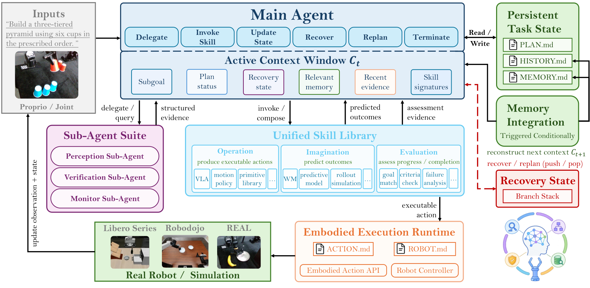

EMERGE-Policy
编排有两个平面：谁去执行，和谁去看证据；这一篇拆的是后者。
EMERGE-Policy: A Robot Mind Emerges Beyond a Single Policy
作者报告 LIBERO-Plus（表 2）完整系统平均 93.9%，其 Cosmos Policy 执行后端为 82.2%，同表 RoboHarness 的报告值为 93.2%；该设置下 EMERGE 另加了五路仅供 Agent 侧使用的相机，并放宽了每集步数上限。
01这篇要解决什么？
如果你已经写过多智能体的 tool-calling 系统，这篇值得学的是上下文的归属问题。机器人执行里最占地方的不是计划，而是每帧检测结果、每次工具调用的中间输出与整段交互轨迹；它们对判断“刚才那一下做成没有”必不可少，对决定“下一步做什么”大多无关。论文把这两类需求拆到不同的上下文里，再规定它们之间只能传结构化结论。
02先看一个场景
LIBERO-Plus 的一次 rollout：桌面背景被换过，相机挪了位置，指令也换了说法。一条冻结策略照训练时的习惯伸过去，抓空了。要把这件事接住，系统得先看清此刻桌上有什么、再判断刚才那一下算不算做成、还得记着前面几步已经做到哪一步；朴素做法是把这些全读进同一个规划器的上下文——每帧的检测结果、每次工具调用的中间输出、整段交互历史，上下文很快被填满，而真正决定下一步动作时用得上的只有其中很少一部分。
03方法怎样运转？

- 01
主 Agent 的上下文里只放摘要
活动上下文 C_t 装的是任务指令、当前子目标、计划状态、Branch Stack 栈顶、任务相关记忆、最近的结构化结果，以及各 Skill 的紧凑签名；原始多模态观测与完整执行轨迹一律留在外面。控制上下文增长靠三件事：把稳定约束与本体配置和动态任务状态分开、只在相关时插入；每个可调接口按 K=⟨I_meta, Θ_param, Φ_pre, Ψ_post⟩ 注册，上下文里先只给一行能力描述 I_meta，选中之后才取参数、前置与后置条件；证据密集的活全部委派出去。规划器实现上是闭源的 Codex（论文记作 codex-5.6-sol），跨基准共享同一套基础动作原语，只按基准换一份 AGENTS.md 提供高层指令。
- 02
子目标写成三元组，感知与验证各自在隔离上下文里做
Main Agent 把指令拆成有序子目标 g_i=⟨Target, Change, Criterion⟩ 写进 PLAN.md：目标实体、意图状态变化、以及判定完成的条件。Sub Agent 以非阻塞后台 worker 的形式跑，建实例时只拿到当前子目标、任务相关的空间范围与被许可的工具原语，处理完只回结构化结果，中间观测、提示与工具轨迹留在自己的上下文里。Perception Sub Agent 走 Scene Graph API 与外部视觉接口，接的是现成模型——SAM3 做开放词表实例分割（用自然语言提示），VGGT 出三维几何先验；作者报告 SAM3 在结构清晰目标上的分割 IoU 如 open basket 0.971、bottle with green cap 0.948、blue soup can 0.946，但在遮挡、光照变化或属性含糊的目标上会漏检，因此把 SAM3 的候选掩码与 VGGT 的几何先验融合。Verification Sub Agent 执行前查前置条件、执行后拿观测比 Criterion，回一个完成判定加支撑证据。
- 03
三类 Skill 按功能登记，同一个模型可以占两个位置
Skill 的分类依据是它在决策循环里干什么，而不是底层架构：Operational 出可执行动作，Imagination 预测候选结果但不改变环境，Evaluation 评估可行性、进度与判据是否满足。LIBERO 系列的执行后端二选一，VLA 是 openpi 的 pi05_LIBERO，WAM 是 nvidia 的 Cosmos-Policy-LIBERO-Predict2-2B，两条都用官方发布的检查点、不额外微调。Cosmos Policy 同时占两个位置：作为 Operational Skill 出动作块，作为 Imagination Skill 预测对应的未来帧；Evaluation Skill 给预测出的末帧对着子目标判据打一个标量分，贪心取最高分那条去执行，只执行首段动作就重新规划。作者报告的具体设置是每个决策步生成 M=5 条候选、每条 horizon H=16、温度 0.1，这一环节带来约 1.2 秒的额外延迟；Evaluation Skill 论文只写成“一个轻量视觉语言模型”，型号没有给出。
- 04
失败先压成局部恢复子目标，压不动才动全局计划
Monitor 或 Verification Sub Agent 发现失败时，回一份含观测证据、失败类型、相关状态变化与可推断原因的结构化报告；Main Agent 据此写一段文本诊断，论文说这一步借鉴 Reflexion 的语言反思机制。诊断之后不是直接重规划，而是构造一个局部恢复子目标压进 Branch Stack，栈顶那个先做，做成就弹出、执行回到被打断的计划。恢复子目标连续失败到预设次数（论文举例两次）之后，才换一个恢复子目标或转入全局重规划——v2 的 §2.1.2 在这一句上保留了未合并的修订文本，两种写法同时存在，论文没有给出统一的重试次数与总预算上限。
- 05
记忆是外部文本，按 token 触发整理，每集清零
论文列了四份任务状态加一个恢复栈：活动上下文窗口当工作记忆，PLAN.md 存子目标序列与完成状态，HISTORY.md 只追加地记时间序摘要，MEMORY.md 是可以被后来证据改写的信念集合，Branch Stack 单独存临时恢复子目标。活动上下文触到 token 容量时由 Memory Integration Agent 整理：被逐出的时间序摘要追加进 HISTORY.md，相关事实并进 MEMORY.md 并改写过时条目，再从指令、PLAN.md 状态、Branch Stack、相关事实与最近的 Sub-Agent 结果重建下一个活动上下文，HISTORY.md 不会整份自动塞回。论文强调这一步只改外部文本、不更新模型权重或 Skill 实现，四份状态在下一集开始前全部重置，因此评测里不存在跨集在线适应。需要注意 §3.5.1 的案例分析换了一套说法，讲的是 PLAN.md 加 ENVIRONMENT.md 的三层记忆，ENVIRONMENT.md 由环境 watchdog 在每次物理动作后刷新、Agent 必须强制重读；两处描述并不完全一致。
plan = decompose(task) # 子目标三元组 ⟨Target, Change, Criterion⟩ → PLAN.md
while plan.unfinished():
g = branch_stack.top() or plan.next() # 恢复子目标优先于主计划
Z_p = sub_agent('perception', raw_obs, g) # 隔离上下文：SAM3 + VGGT，只回结构化证据
cands = imagination(Z_p, g, M=5, H=16) # Cosmos Policy 预测候选动作块的未来帧
a = argmax(evaluation(cands, g.criterion)) # 轻量 VLM 打分，温度 0.1，贪心选
obs = operational(a) # π₀.₅ 或 Cosmos Policy，官方检查点、不微调
Z_v = sub_agent('verification', obs, g) # 判定者是它，依据是 g.criterion
if Z_v.ok: plan.mark_done(g); branch_stack.pop_if(g)
elif g.retries < K: # K 论文举例为 2，未给统一上限
branch_stack.push(recovery(main_agent.diagnose(Z_v.report)))
else:
plan = replan(Z_v.report) # 局部恢复补不上才动全局计划
if tokens(C) >= cap: C = memory_agent.consolidate(C) # 写 HISTORY/MEMORY，权重不动方法与结果的原文定位见本页引用。
04跟着这个场景走一遍
教学推演：回到上面的场景。第一步，Main Agent 的上下文里并没有那几路相机的画面，只有指令、PLAN.md 的当前状态、Branch Stack 栈顶和几行 Skill 签名；它要用某个接口时才把这个接口的参数、前置与后置条件取进来，别的接口仍旧只占一行描述。第二步，它把这一段写成子目标三元组——目标是那只碗、变化是被抓起并移到盘上、判据写成可以对着观测判定的条件——再把感知委派出去：Perception Sub Agent 在自己的隔离上下文里用 SAM3 按“黑碗”这样的语言提示取实例掩码，配 VGGT 的几何先验定位，回来的只是坐标与空间关系，不是整条检测轨迹。第三步，执行前先想一遍：Cosmos Policy 作为 Imagination Skill 出 5 条候选动作块、各预测 16 步的未来帧，Evaluation Skill 给每条的预测末帧按判据打分，贪心选最高的那条交给 Operational Skill 执行，只走首段就回头重新决策。第四步，动作走完，Verification Sub Agent 拿新观测比判据，发现碗并没有离开桌面，于是回一份失败报告；Main Agent 写下文本诊断，把一个局部恢复子目标压进 Branch Stack——比如先退开重新对位——栈顶做成之后弹出，回到原来那条计划继续，而不是整段重规划。第五步，这一轮的摘要在活动上下文触到 token 上限时被 Memory Integration Agent 整理：时间序摘要追加进 HISTORY.md，“这只碗此刻在托盘右侧”这类事实并进 MEMORY.md 并覆盖掉过时的旧值，下一个活动上下文从指令、计划状态、Branch Stack 与这些事实重新拼出来。这套机制没有做到的是：判定“做成没有”的那个 Sub Agent 与给出计划的是同一个规划器模型、只是换了上下文，论文没有提供独立于它的判据来估计自报验收的误接受率；四份文本状态每集清零，所以这里的“记忆”只在一集之内起作用，不构成跨任务的经验积累；执行后端的能力边界也一点没变，想象与评估只能在它出的候选里挑，挑不出这条策略本来就做不到的动作。
05实验到底表现怎样？
作者在三套桌面基准 LIBERO、LIBERO-Plus、LIBERO-Pro 与双臂的 RoboDojo 上评测。高层规划器全程是闭源的 Codex（论文记作 codex-5.6-sol），基础动作原语集合跨基准与跨设置保持不变，只按基准换一份 AGENTS.md 提供高层指令；LIBERO 系列的执行后端二选一，VLA 是 openpi 的 pi05_LIBERO，WAM 是 nvidia 的 Cosmos-Policy-LIBERO-Predict2-2B，都用官方检查点、不额外微调。协议上有两处改动必须一并记住：LIBERO 系列在原评测环境之外另加了五路固定相机，只供 Agent 侧的感知与规划使用，不进 WAM 与 VLA 的观测，因此不改变底层策略的输入空间；每集步数上限相对原基准被放宽，论文只写“适度增加”，没有给出具体数值。各套件的试验次数论文没有报告，作者自己在 §3.2.2 提醒这些接近天花板的差异要连同试验次数与不确定度一起看。真机部分是“Multi-layered Cup Stacking”，搭 3-2-1 的三层纸杯金字塔，共 100 次实验用于统计五类任务的完成率，另有四种干扰设置各 30 次；论文没有给出机械臂型号与传感器配置。
作者报告的实验结果 · v2
| 作者报告的总体（对应表格） | 执行后端直接运行 | EMERGE-Policy |
|---|---|---|
| 标准 LIBERO 四套件平均 · 表 1 | Cosmos Policy 98.5% | w/ WM 99.2% |
| 标准 LIBERO 四套件平均 · 表 1 | π₀.₅ 96.8% | w/o WM 98.8% |
| LIBERO-Plus 七类扰动平均 · 表 2 | Cosmos Policy 82.2% | w/ WM 93.9%（同表 RoboHarness 93.2%） |
| LIBERO-Pro 隐式指令 Total(S) · 表 3 | π₀.₅ 20.8% | 77.8%（同表 HarnessVLA 68.8%） |
| RoboDojo 平均 分数 / 成功率 · 表 5 | π₀.₅ 11.41 / 6.91% | 20.46 / 13.54% |
原始证据：方法总览：§2 ↗ · 子 Agent 与技能编排：§2.2–2.3 ↗ · 基准结果：§3.2 / 表 1–3 ↗ · 消融：§3.4 / 表 4 ↗
标准 LIBERO 已经贴着天花板，+2.0 与 +0.7 个百分点要连同试验次数与不确定度看，而论文没有报告次数，作者自己也写明不应把它当作大幅突破。真正拉开差距的是扰动与隐式指令：LIBERO-Pro 表 3 的 Spat-S 是 95.7% 对 20.0%，L10-S 是 59.1% 对 8.0%。但这是完整系统对端到端策略的比较，EMERGE 这一侧多了五路相机与被放宽的步数上限；作者在 RQ2 里明确说这组数字不能分离角色化分工的贡献，需要相同相机、工具、提示与交互预算下的单 Agent 对照，而论文没有做这一组。与同表 RoboHarness、HarnessVLA 的比较也只有在观测、相机与交互预算匹配时才算受控。表 5 最容易读反：EMERGE 的平均分数 20.46 是表中最高，但平均成功率 13.54% 低于 GalaxeaVLA(G0.5) 的 14.88%，它真正领先的是 Memory（25.00 / 22.51%）与 Open（19.98 / 11.20%）两个维度，Precision 与 Long-Horizon 反而低于若干端到端基线；同表人类遥操作为 80.42 / 76.03%，说明整体水位仍然很低。引言里“成功率比基线提升 3.59%”这一句没有指明是哪一个基线，表 5 里也对不上，讲义不引用这个数字。真机部分作者报告标准条件 94%，相机视角与数量变化降到 85%，执行中断并拆掉部分已搭结构后为 86%，纸杯尺寸变化 5%–15% 时为 92%，场景颜色变化时维持 93%–94%；这几个数来自每种干扰各 30 次，样本量小，不宜与仿真数字并列。
06收益来自哪里，又停在哪里？
消融与机制证据
表 4 在 LIBERO-Plus 上逐项屏蔽，参照是完整系统的 93.9%：去掉 Evaluation Skill 降到 85.6%（-8.3），去掉世界模型的 Imagination Skill 降到 88.3%（-5.6），去掉 Verification 与 Monitor 两类 Sub Agent 降到 91.2%（-2.7）。有两处不能略过：w/o WM 在 Layout 一列反而 +2.6，作者解释为静态空间偏移下的想象可能引入噪声；w/o Sub 只移除了 Verification 与 Monitor，Perception Sub Agent 仍在，所以这一行不能当成“没有角色化分工”的对照。图 5 是逐级叠加移除的结果，平均值沿 93.9% → 88.3%（去 WM）→ 84.4%（再去 Sub）→ 82.2%（再去 Eval）下降。§3.5.2 另报告了一组把 Imagination 关掉、Evaluation 只对当前观测打分的开环选择，平均降到 85.1%，支持“预测再挑”这一步本身有用。§3.5.3 报告加入任务先验后每个子目标的规划步数减少 24.7%、每集墙钟时间减少 16.3%，成功率 96.7% 对 95.2%，但只写了“重复试验”，没有给出次数。这些消融都在同一套协议内做，没有回答相同相机与步数预算下单 Agent 能做到多少。
结论的适用边界
模型来源是混合的，成本要分开算。执行侧两条都是现成检查点：VLA 是 openpi 的 pi05_LIBERO，WAM 是 nvidia 的 Cosmos-Policy-LIBERO-Predict2-2B，论文明确说使用官方发布的检查点、不做额外微调；感知侧接的也是现成模型，SAM3 做开放词表分割、VGGT 出几何先验；高层规划器是闭源的 Codex（论文记作 codex-5.6-sol），同样不为机器人训练。作者自己训练的模块，论文没有报告任何一个——唯一可能存在训练的位置是 Evaluation Skill，但论文只写成“一个轻量视觉语言模型”，既没有给出型号，也没有说它是否经过微调。因此真正的前提成本不在训练，而在工程与预算：角色化 Sub Agent 的划分与隔离上下文、三类 Skill 与接口 schema、Branch Stack 与四份外部记忆文件、每个基准一份 AGENTS.md，再加上 LIBERO 系列额外挂的五路相机、被放宽的每集步数上限，以及想象—评估环节每个决策步约 1.2 秒的延迟。另有几处论文没写清，讲义保持保守：恢复重试只给了“预设次数（例如两次）”这一说法，且 v2 的 §2.1.2 保留了未合并的修订文本；步数上限只说“适度增加”，没有数值；各基准的试验次数没有报告；真机的机械臂型号与传感器配置没有给出。最后，外部记忆全部是每集重置的文本，论文强调不存在跨集在线适应，所以这里的“记忆”指一集之内的状态保持，不是跨任务的经验积累。
07放回全书的脉络
与 PhyAgentOS 并读最直接：两篇都拒绝把“控制器正常返回”当成“任务完成”，但 PhyAgentOS 把判定权交给运行时里独立的 SessionVerifier，这一篇交给一个与规划器同源、只是换了上下文的 Verification Sub Agent，谁更独立值得追问。与 Harness VLA、RoboHarness 对照的是编排对象：那两篇编排的是能力（何时把控制权交给冻结策略、怎样把状态推进下一条策略的支撑区），这一篇编排的是证据（哪一路观测处理结果有资格进入规划器的上下文）。与 RoboOS 比共享状态的形式，一边是实时共享记忆、一边是可追加可审计的文本文件。与 ASPIRE 比“记忆”的含义：ASPIRE 沉淀的是跨任务可复用的修复知识，这一篇的四份文本状态每集清零。
08把阅读变成一个小研究
按作者在 RQ2 里自己提出、却没有做的那组对照设计实验：固定执行后端（π₀.₅ 官方检查点）、固定相机路数（含那五路额外视角）、固定每集步数上限与工具集合，只比较三种编排——单 Agent 把感知、验证、监控的输出全部直接读进同一个上下文；同样的单 Agent，但对这些输出做定长截断或摘要；完整的角色化 Sub Agent 分工。在 LIBERO-Plus 的七类扰动上分别记录成功率、每集 token 消耗、每集实际物理步数与恢复次数。
先自己回答：这项实验怎样才有解释力？
有解释力的结果不是“分工更好”，而是收益随上下文压力如何变化。如果单 Agent 加一层简单摘要就追平了完整分工，增益就来自控制信息量，而不是角色划分本身；如果分工只在 token 消耗接近上限的长任务上领先，解释应当落在上下文预算上，报告的主图就该是每集 token 曲线而不只是成功率。恢复次数与实际物理步数要与成功率一起列：三种配置即使名义预算相同，实际用量差一倍的话，成功率差异里就混进了尝试次数。还建议加一组把完成判定换成基准自带完成谓词的条件——Verification Sub Agent 与主规划器很可能是同一个模型，这组对照才能估计自报验收的误接受率。
- 用自己的话说出这篇改变了哪个模块。
- 画出它的输入、输出和一次失败如何被处理。
- 复述一个结果，同时说清基线、指标与实验条件。这一问不给答案，材料在第 05 节。
先自己答，再看前两问的参考答案
这篇改了哪个模块改的是编排系统内部的信息分工：感知、验证、监控与记忆整理从高层规划器的上下文里被搬出去，放进各自隔离的 Sub Agent 上下文，只把结构化结论交回来。没改执行侧——π₀.₅ 与 Cosmos Policy 都用官方检查点、全程不额外微调，动作空间与基准自己的成功判据也没动；规划器是现成的闭源 Codex，不为机器人做任何训练。运行时被改写的只有外部文本状态（PLAN.md、HISTORY.md、MEMORY.md 与 Branch Stack），论文明确说这一步不更新任何模型权重，也不改 Skill 的实现。
输入、输出与一次失败如何被处理输入分两路进两个地方：原始多模态观测（LIBERO 系列除原环境视角外另加五路固定相机，仅供 Agent 侧使用，不进 WAM 与 VLA 的观测）只进 Sub Agent 的隔离上下文；Main Agent 的活动上下文里只有任务指令、当前子目标、PLAN.md 的计划状态、Branch Stack 栈顶、相关记忆、最近的结构化结果，以及每个可调接口的一行签名。输出是一次编排决策——委派某个 Sub Agent、调用某个 Skill、更新任务状态、发起恢复、修订计划或终止；物理动作经 Embodied Action API 落到规则运动原语或 VLA 策略上。一次失败的判定者是 Verification Sub Agent 或 Monitor Sub Agent，依据是该子目标三元组里写死的 Criterion 与执行后的观测（监控信号取决于部署的传感器与执行后端），它回一份含观测证据、失败类型、状态变化与可推断原因的结构化报告。Main Agent 据此写一段文本诊断，把一个局部恢复子目标压进 Branch Stack，栈顶先做、做成就弹出并回到被打断的计划；论文说恢复子目标连续失败到预设次数（举例两次）之后才换一个恢复子目标或转入全局重规划，但 v2 在这一句上保留了未合并的修订痕迹，两种写法并存，统一的次数与预算上限论文没有给出。
编排有两个平面：谁去执行，和谁去看证据；这一篇拆的是后者。
↗带着位置回到原文
首发日期用于时间排序；以下方法与结果对应 v2。数据为论文作者报告，本讲义没有独立复现实验。
QA就这一页提问或讨论
对某个数字、某条边界或某个推演有疑问，欢迎直接留言：讨论按页面分开，回复会保留在 XinrunXu/awesome-agentic-robotics-papers 的 Discussions 里，需要一个 GitHub 账号。